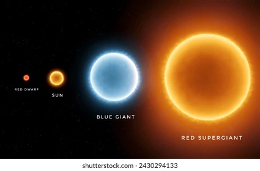

Estrella enanas
El término estrella enana se usa en astronomía para describir diferentes tipos
de estrellas que, aunque pequeñas en tamaño comparadas con gigantes y supergigantes,
son muy comunes en el universo. Dependiendo de sus características, se dividen en varios tipos.

Tipos de estrellas enanas
- Enanas rojas
- Son las estrellas más comunes del universo.
- Más pequeñas y frías que el Sol.
- Queman su combustible de forma muy lenta, por lo que viven billones de años.
- Ejemplo: Proxima Centauri, la estrella más cercana al Sol.
- Enanas amarillas
- Estrellas de tamaño mediano como el Sol.
- Son más calientes que las enanas rojas.
- Su vida útil dura alrededor de 10.000 millones de años.
- Ejemplo: nuestro Sol.
- Enanas blancas
- Restos de estrellas que agotaron su combustible y expulsaron sus capas externas.
- Muy densas y calientes, pero ya no producen energía por fusión.
- Representan la etapa final de muchas estrellas.
- Enanas marrones
- a veces llamadas "estrellas fallidas"
- No alcanzaron la masa suficiente para iniciar la fusión nuclear.
- Son más grandes que un planeta gigante, pero más pequeñas que una estrella.
- Emiten poca luz y calor.
Volver al inicio